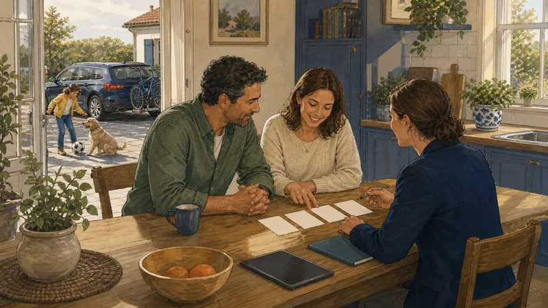

Simule online.
A conversa é connosco.
Os simuladores são da Generali Tranquilidade e abrem já associados à AJT. Simule quando lhe der jeito e, se quiser, revemos consigo depois.
A simulação é feita e guardada pela seguradora, segundo a política de privacidade dela. Como a ligação identifica a AJT, o pedido chega-nos e podemos acompanhá-lo. Simular não obriga a nada: aceitar o contrato compete sempre à companhia.
Generali Tranquilidade
Rua Carlos Manuel Rodrigues Francisco · 210 889 917Os nomes comerciais são das respetivas companhias. Nem todos os ramos têm simulador: acidentes de trabalho, frotas, multirriscos empresarial e responsabilidade civil cotam-se caso a caso. Para esses, peça-nos a simulação.

Simulou e ficou
na dúvida?
Um preço só se compara depois de se saberem as coberturas. Ligue com a simulação à frente e dizemos o que cobre e o que não cobre.
Sem compromisso. Não usamos os seus dados para mais nada.